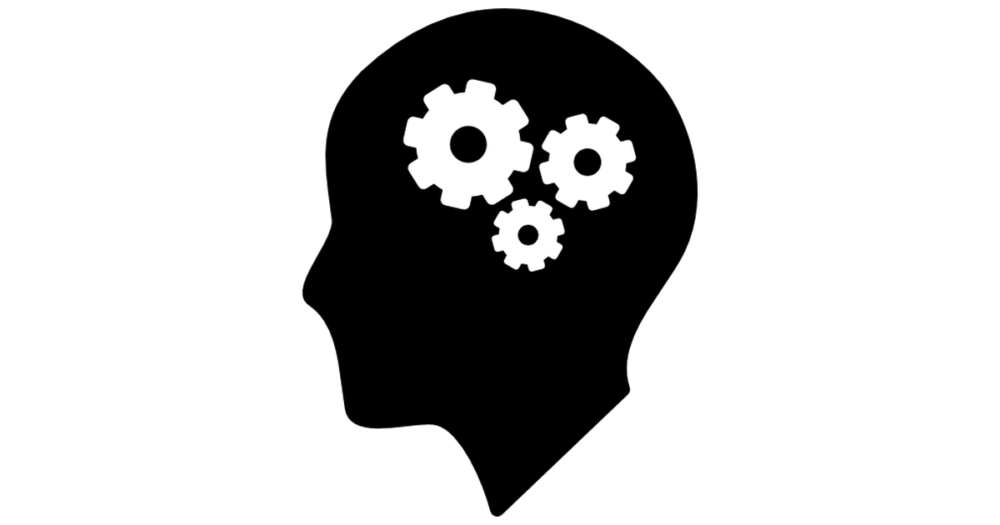

Skills:
Knowledge of JAVA (OOP, Design Patterns e.g. DAO, MVC, enums, polymorphism, interfaces).
Basic Knowledge of Spring (Spring Data, Spring Boot), Hibernate.
Basic Knowledge of Android (ButterKnife, Retrofit, Picasso).
Knowledge of Git.
Basic Knowledge of Database: SQLite, MySQL.
Basic Knowledge of HTML, CSS (Bootstrap, JQuery, JavaScript).
Knowledge of Linux (Ubuntu), Windows (7-10).
Knowledge of Eclipse, IntelliJ IDEA, Android Studio.
High interpersonall skills.
Hard working, reliable, puntucal.
Driving licence.

Courses:
Java Bootcamp Course – Akademia Kodu, Warsaw (November – December 2016).
certified of Internal Quality Auditor (duration - 30 hours), Bureau Veritas in collaboration with UP Lublin.
certificate from 3D design with Autodesk Inventor - advanced degree, Autodesk in cooperation with UP Lublin.
course of physical recreation istructor, downhill skiing.